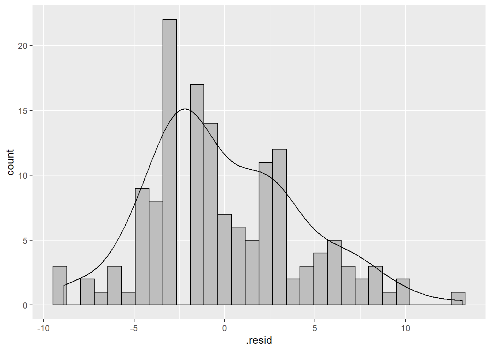
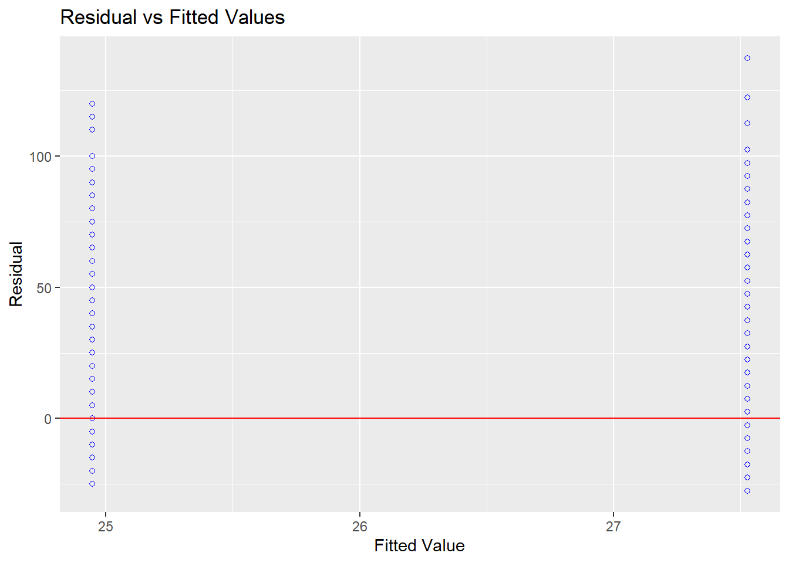
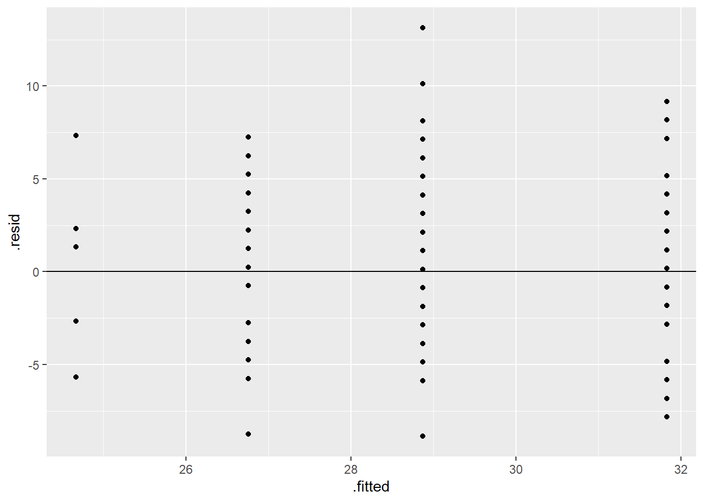
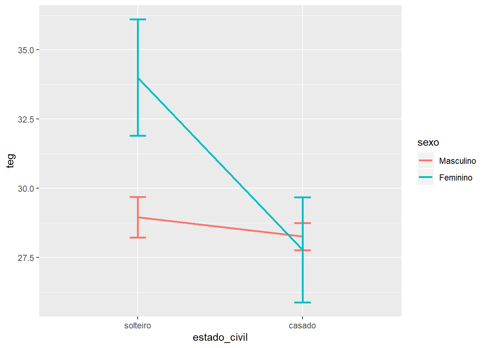

Capítulo 5 ANOVA
Objetivos do capítulo
1. Apresentar a ANOVA
2. Discutir os pressupostos de execução da ANOVA
3. Realizar gráficos relacionados à comparação de médias
4. Apresentar e interpretar métricas de tamanho do efeito
5. Dar exemplos relacionados à escrita dos resultados 6. Discutir os testes post-hoc
7. Apresentar versões não paramétricas da teste ANOVA (Kruskal-Wallis)
A ANOVA é um teste estatístico desenvolvimento para verificar diferença entre diversos grupos. Pragmaticamente, é possível entender ANOVA como um super teste T, onde o que está em jogo não é somente o quanto as médias amostrais estão distantes, mas o quão distantes estão relativamente à variabilidade de observações individuais.
Conceitualmente, similar ao teste T, a ANOVA é um caso especial de um modelo de regressão em que a variável independente é discreta/categórica.
Em Psicologia, alguns autores indicam que a ANOVA é a técnica inferencial mais utilizada (Chartier and Faulkner 2008; Howell 2011). Se por um aspecto, isso é extremamente vantajoso por estreitar a relação entre Psicologia e Estatística, por outro, isso parece ter contribuído para criação e manutenção de diferentes conceitos equivocados sobre a ANOVA.
Conceitualmente, a ANOVA é um modelo linear, tal que:
\[y_i = b_0 + b_1X{_1}_i + \epsilon_{i}\]
\(y_i\) representa a variável dependente
\(b_0\) é o intercepto (coeficiente linear)
\(b_1\) é a inclinação (coeficiente angular)
\(\epsilon_{i}\) é o erro/resíduo
Todos os pressupostos dos modelos linares são mantidos e o mnemônico LINE auxilia a resgatar todos eles. Assume-se que o erro é independente e identicamente distribuído (\(iid\)), distribuído normalmente com média 0 e variância constante \(\sigma^2\), ou seja: \[ \epsilon\stackrel{iid}{\sim} \mathcal{N}(\mu,\,\sigma^{2})\,\] Além de homocedástico: \[ VAR(\epsilon |x_1,x_2,...,x_k)=\sigma^2 \].
iidainda signica erros descorrelatados \[ COV(\epsilon_1,\epsilon_j)=0 \].
É importante atentar que assumir média 0 \(E(\epsilon|x)=0\), também implica que a correlação do erro com as variáveis é nula. Operacionalmente, o erro representa todos os fatores de pesquisa e problemas de medição que afetam o resultado além das variáveis independentes consideradas na modelagem.
Da mesma forma que feito em outros capítulos, a tabela abaixo concatena os testes estatísticos relacionados quando os pressupostos são violados. Para fins de comparação com outros trabalhos, há autores que sugerem que se use sempre as versões não-paramétricas em resultados obtidos por processos de avaliação psicológica, arguindo que os dados têm nível de medida “ordinal”.
| Versão do teste | Um ou mais fatores | Momentos repetidos |
|---|---|---|
| Paramétrica | Anova de k via(s) | Anova de medidas repetidas |
| Não-paramétrica | Kruskal-Wallis | Teste de Friedman ou Page Test |
A ANOVA tem diversas características de modelagem que serão descritas na seção a seguir,
5.1 Legenda
Diferentes termos são empregados em uma ANOVA. A legenda a seguir visa auxiliar no entendimento de cada um deles e aproximar o leitor a conceitos amplos utilizados em modelos lineares:
Fator: Variável independente, via, variável fonte, variável preditora, tratamento
Desfecho: Variável dependente, variável critério
Níveis: Grupos, condições, categorias da variável independente
Efeito principal: Efeito da variável independente, sem considerar outras caracterísitcas do modelo
Efeito de interação: Efeito do termo de interação entre duas ou mais variáveis independentes.Quando significativo, não se interpreta os efeitos principais.
Efeito simples: Efeito de uma variável independente em um nível (específico) de outra variável independente.
Por heurística, se escreve os delinementos estudados por uma ANOVA com \(\eta\). Se, por exemplo, o interesse seja o de verificar o efeito do sexo (masculino ou feminino) e da escolaridade (fundamental, médio e superior), a representação será \(\eta = 2 \times 3\). Isso significa que a ANOVA tem dois fatores (sexo e escolaridade) e o primeiro fator tem dois níveis e o segundo tem 3 níveis.
5.2 Pesquisa
Base: Livro - R - TEG
Neste capítulo, vamos utilizar a pesquisa intitulada “A relação entre o nível de Empreendedorismo (TEG) e os aspectos sociodemográficos dos Taxistas cooperados da cidade de Santo André/São Paulo, Brasil”, publicada em 2016 na Revista Eletrônica de Gestão e Serviços, em que sou co-autor. O objetivo dessa pesquisa foi identificar o nível de empreendedorismo em 147 taxistas de Santo André/SP, bem como averiguá-lo em associação aos aspectos sociodemográficos. A base contém 14 variáveis, sendo 6 variáveis da escala utilizada para avaliação do empreendedorismo e 8 variáveis gerais, incluindo aqui os aspectos sociodemográficos, como sexo e escolaridade. Essa base será utilizada para realizar uma ANOVA de 1 via, 2 vias e uma ANOVA fatorial.
5.3 ANOVA de 1 via
A pergunta que temos agora é sobre o possível efeito da escolaridade na Tendência Empreendedora Geral (teg). Trata-se de uma ANOVA de 1 via, dado que existe apenas uma VI, com mais de 2 níveis.
5.3.1 Execução no R
Ao trabalhar no R, é fundamental se certificar que os tipos das variáveis estão corretamente definidos em função da escala de medida utilizada. Erros nessa etapa podem gerar resultados absolutamente incorretos. A escolaridade é uma variável categórica (ordinal, tratada como discreta) e é necessário definir claramente isso ao R antes da análise propriamente dita.
Isso pode ser feito pela função case_when e levels. O case_when irá substituir os valores originalmente presentes nessa variável e o levels deixará claro a ordem de cada categoria, o que é útil para que os gráficos sejam feitos corretamente.
dados_teg <- dados_teg %>%
mutate_at(vars(escolaridade),
~factor(case_when(
. == 1 ~ "Primário",
. == 2 ~ "Ginásio",
. == 3 ~ "Colegial",
. == 4 ~ "Superior"),
levels=c("Primário","Ginásio","Colegial","Superior")))Uma vez que os itens de um instrumento sociodemográfico devem levar em consideração o contexto das pessoas avaliadas e, as categorias de escolaridade foram definidas como as apresentadas. Primário significa escolaridade até o 5º ano, ginásio significa escolaridade até o 9º ano e colegial é equivalente ao ensino médio.
As hipóteses precisam ser descritas:
\[H_0 = \mu_{escolaridade_i} - \mu_{escolaridae_j} = 0 \\ H_a = c.c \\ \alpha = 0.05\] Aqui, o subscrito \(i\) e \(j\) foi utilizado de maneira liberal para apresentar a diferença entre todas as combinações lineares possíveis.
Em seguida, a apresentação tabular das médias e desvios-padrão pode ser realizada.
dados_teg %>%
group_by(escolaridade) %>%
summarise_at(vars(teg), lst(n=~n(),mean,sd)) %>%
kable(digits = 2) %>% kable_styling(bootstrap_options = c("striped", "hover", "condensed"))| escolaridade | n | mean | sd |
|---|---|---|---|
| Primário | 6 | 24.67 | 4.63 |
| Ginásio | 33 | 26.76 | 3.86 |
| Colegial | 85 | 28.87 | 4.11 |
| Superior | 23 | 31.83 | 5.23 |
Tal como ilustrado no decorrer dos outros capítulos, gráficos são fundamentais para entendimento do relacionamento entre as variáveis. Uma vez que a escolaridade (VI) é tratada como discreta e a TEG (VD) é contínua, um gráfico de barras é adequado. A inclusão das barras de erro permite uma compreensão inferencial inicial.
ggplot(dados_teg, aes(x=escolaridade, y = teg, fill = escolaridade)) +
geom_bar(stat = "summary") +
stat_summary(fun.data = mean_se, geom = "errorbar") +
theme(legend.position = "none")
A visualização dos resultados já permite identificar algumas caracteríticas gerais. Primeiro, quão maior a escolaridade, maior o o valor obtido na escala. Segundo, algumas barras de erros estão superpostas e outras não, o que nos leva à conclusão preliminar de que resultados significativos estarão presentes na próxima etapa, que é a modelagem formal dessa hipótese.
A modelagem formal irá contemplar n-1 níveis dos preditores e estipulará no intercepto o nível de referência. Dessa maneira:
\[y_{i} = b_{0} + b_1Esc_{ginasio_i} + b_2Esc_{colegial_i} + b_1Esc_{superior_i} + \epsilon_{i}\]
\(b_0\) representa o intercepto, que aqui é o valor médio da Escolaridade primária
\(b_i\) representa os outros preditores
\(\epsilon_{it}\) representa o erro
A função lm será utilizada e o objeto mod_escolaridade será armazenado. É também possível utilizar a função aov e a escolha da lm foi apenas por conveniência.
Antes de checar os resultados, é necessário verificar se os pressupostos da ANOVA foram atendidos. Esses pedem que os resíduos sejam normalmente distribuídos e homocedásticos. Tal como previamente exposto no teste T, a investigação dessas condições é tanto feita por gráficos e testes formais e ambos são muito úteis. A análise da normalidade dos resíduos será inicialmente feita.
O gráfico abaixo apresenta a distribuição dos resíduos:
ggplot(fortify(mod_escolaridade), aes(.resid)) +
geom_histogram(colour="black", fill="grey") +
geom_density(aes(y= ..count..))
O teste formal pode ser feito via shapiro-wilk. Tal como no teste T, a \(H_0\) desse teste assume normalidade e, idealmente, não deve ser rejeitada.
##
## Shapiro-Wilk normality test
##
## data: residuals(mod_escolaridade)
## W = 0.97502, p-value = 0.008721Uma vez que o valor foi menor do que o previamente estipulado ao \(\alpha\), é possível concluir que o pressuposto da normalidade foi violado. situações como essa são muito frequentes. Na literatura, são presentes recomendações de ajuste dos dados por alguma função g(.) ou tornar mais severo o valor de p na interpretação dos resultados. Por exemplo, em vez de 0.05, usar 0.01.
A homocedasticidade pode ser verificada por um gráfico dos resíduos contra os valores previstos. O ideal é não encontrar padrões no gráfico.
ggplot(fortify(mod_escolaridade), aes(x=.fitted, y=.resid)) +
geom_point() +
geom_hline(yintercept = 0)
Além do teste de Bartlett ou Levene, em que estipulam \(H_0\) como homocedasticidade e, idealmente, não deve ser rejeitada.
## Levene's Test for Homogeneity of Variance (center = median)
## Df F value Pr(>F)
## group 3 1.1372 0.3362
## 143A homocedasticidade foi assumida. Dessa maneira, mesmo com a violação da normalidade, o modelo será utilizado e seu sumário geral será apresentado pela função apa.aov do pacote apaTables. Isso é importante para garantir resultados programas tipicamente utilizados, como o SPSS e o STATA. Essa tabela é padronizada e muito similar na maioria dos programas estatísticos. Ela traz as seguintes informações principais:
| Preditor | Soma dos Quadrados | Graus de liberdade | Quadrado médio | Estat. F |
|---|---|---|---|---|
| Fator | Entre (SSB) | K-1 | MSB = SSB/ k-1 | F = MSB/MSW |
| Resíduo | Dentro (SSW) | N-k | MSW = SSW/ N-K | |
| Total | Total (SQT) | N-1 |
Aqui, K significa quantidade de categorias dentro de um fator e N significa a quantidade de observações consideradas. As siglas em inglês são comumeiramente utilizadas falar falar da “Soma dos quadrados entre os grupos” (SSB), “Soma dos quadrados dentro dos grupos” (SSW), “Quadrado médio entre grupos” (MSB) e “Quadrado médio dentro dos grupos” (MSW). Repare também que,a este momento, os aspectos são apenas apresentados conceitualmente e não matematicamente. Em outro momento, aspectos da decomposição da variância serão também descritos.
##
##
## ANOVA results using teg as the dependent variable
##
##
## Predictor SS df MS F p partial_eta2
## (Intercept) 3650.67 1 3650.67 200.61 .000
## escolaridade 449.33 3 149.78 8.23 .000 .15
## Error 2602.27 143 18.20
## CI_90_partial_eta2
##
## [.06, .22]
##
##
## Note: Values in square brackets indicate the bounds of the 90% confidence interval for partial eta-squaredA leitura desse resultado é similar a de um modelo de regressão e a de outros modelos lineares e, em linhas gerais, em relatório ou publicações quase sempre apenas se diz que o modelo foi significativo, indicando as principais estatísticas obtidas da seguinte maneira: F(3,143) = 8.231, p < 0.01, ηp2 = 0.15, 90% CI [.06, .22].
No entanto, o que essa constatação está realmente dizendo é que houve uma comparação entre dois modelos, um que usou os resultados da variável “escolaridade” para prever os resultados obtidos pelo TEG (chamado de Modelo aumentado) e outro que usou apenas a média que o TEG (chamado de modelo compacto ou nulo neste caso). O resultado significativo indica que a inclusão da “escolaridade” no modelo testado foi significativamente capaz de reduzir o erro de previsão que o modelo nulo obteve (em ingles Proportional Reduction in Error ou PRE). Ainda nesse caso, o ηp2 (eta parcial quadrado) indica a proporção da variabilidade dos resultados do TEG que pode ser atribuídos à escolaridade e é uma métrica de tamanho do efeito, cuja interpretação se recomenda da seguinte maneira:
De fato, quando isso ocorre, a busca por possíveis diferenças entre todas as comparações possíveis costuma ser feita por testes post hocs.
Entretanto, é importante mencionar que que se uma ANOVA é significativa, isso não significa necessariamente que haverá alguma diferença entre as médias dos grupos. Tecnicamente, a diferença pode ocorrer em qualquer comparação possível, como grupo 1 contra grupos 2 + grupo 3 ou grupo 2 contra grupo 1+3. Dessa forma, o resultado geral da ANOVA e testes post hoc respondem questões diferentes e é possível realizar qualquer comparação múltipla sem sequer realizar a ANOVA, desde que os resultados sejam devidamente corrigidos caso se assuma alguns pressupostos sobre os constrastes.
Uma vez que realizar uma ANOVA não é tecnicamente necessário para realização de comparações pareadas, é possível que alguém se pergunte qual é, então, a necessidade da realização deste primeiro teste. De fato, hoje em dia, a realização da ANOVA ocorre mais para que o pesquisador (i) consiga realizar computacionalmente todas as comparações pareadas entre as categorias da variável e, em seguida, (ii) corrigir adequadamente o valor de P obtido em cada computação.
Isso dito, uma vez que a escolaridade foi significativa, as principais comparações serão testadas dois a dois.Sempre que múltiplas que comparações são realizadas, é esperado que haja uma inflação do erro do tipo 1 e, por isso, é necessário ajustar o valor de P. Repare que a quantidade de comparações pode ser calculada da seguinte forma:
\[ J*(\frac{J-1}2) \] , onde \(J\) é a quantidade de níveis da variável
Nesse caso:
\[ 4*(\frac{3}2) = 6 \].
Para a comparação pareada, o pacote emmeans será utilizado.
5.3.2 Post hoc
A mecanica do por detrás do post hoc é a comparação pareada de todos os níveis presentes no fator, seguido pelo ajuste do valor de P. Existem muitas técnicas para tal ajuste e elas costumam ser agrupadas em função da sua robustez à violação da homocedasticidade. Para fins práticos, vamos utilizar uma técnica considerada bastante conservadora, chamada de Bonferroni, que multiplica o valor bruto encontrado pela quantidade de comparações.
O resultado das comparações dois a dois será armazenado em um objeto específico, nomeado como post_hoc_escolaridade. Isso será útil para apresentar sumários e gráficos.
## Warning: package 'emmeans' was built under R version 3.6.3Tal como feito até agora, o gráfico inicial das comparações será realizado. A adição das barras de erro gera interpretação mais rápida e simples para todas as comparações.
CI <- confint(post_hoc_escolaridade)
ggplot(mapping = aes(contrast, estimate)) +
geom_errorbar(aes(ymin = lower.CL, ymax = upper.CL), data = CI) +
geom_point(data = summary(post_hoc_escolaridade)) +
geom_hline(yintercept = 0, linetype = "dashed") +
scale_size(trans = "reverse") +
coord_flip()
A apresentação tabular é fundamental e apresenta as estatísticas inferenciais de interesse:
post_hoc_escolaridade %>%
kable(digits = 2) %>% kable_styling(bootstrap_options = c("striped", "hover", "condensed"))| contrast | estimate | SE | df | t.ratio | p.value |
|---|---|---|---|---|---|
| Ginásio - Primário | 2.09 | 1.89 | 143 | 1.10 | 1.00 |
| Colegial - Primário | 4.20 | 1.80 | 143 | 2.33 | 0.13 |
| Colegial - Ginásio | 2.11 | 0.87 | 143 | 2.42 | 0.10 |
| Superior - Primário | 7.16 | 1.96 | 143 | 3.66 | 0.00 |
| Superior - Ginásio | 5.07 | 1.16 | 143 | 4.37 | 0.00 |
| Superior - Colegial | 2.96 | 1.00 | 143 | 2.95 | 0.02 |
Os resultados são significativos na comparação Superior - Primário, Superior - Ginásio e Superior - Colegial. Em todos, os resultados do TEG foi mais elevado naqueles participantes que haviam concluído o ensino superior.
A esse momento, a escrita é fundamental:
Como escrever os resultados
Os dados foram analisados a partir de uma ANOVA de uma via investigando o efeito da escolaridade no empreendedorismo, medido por um escala específica. Foi possível concluir que a escolaridade é significativa (F(3, 143) = 8.23, p < 0.01, ηp2 = 0.15, 90% CI [.06, .22]) e as comparações pareadas, ajustadas pela técnica de Bonferroni, mostraram que os participantes com ensino superior apresentam pontuação mais alta do que àqueles com o primário (Δ = 7.16, p < 0.01), ginásio (Δ = 5.07, p < 0.01) e colegial (Δ = 2.96, p < 0.05).
5.4 ANOVA de 2 vias
Frequentemente, o interesse do pesquisador está em investigar como múltiplos fatores afetam a variável de interesse. Ao aumentar o número de variáveis independentes no modelo, se aumenta a quantidade de vias que a ANOVA possui. Se, por exemplo, a investigação visasse testar o efeito da escolaridade e do sexo no empreendedorismo, teríamos, por definição, uma ANOVA de duas vias. É fundamental atentar que essa modelage inicialmente considera apenas os efeitos principais dos fatores e não assume ou modela uma possível interação entre os preditores.
5.4.1 Execução no R
Após a escrita adequada da hipótese, a modelagem segue o mesmo padrão da feita anteriormente, iniciando pela definição correta do tipo de variável em relação à sua escala de medida.
dados_teg <- dados_teg %>%
mutate_at(vars(sexo), funs(
factor(case_when(
. == 1 ~ "Masculino",
. == 2 ~ "Feminino"), levels=c("Masculino","Feminino"))))Tabelas e gráficos também devem ser apresentadas.
dados_teg %>%
group_by(escolaridade, sexo) %>%
mutate(rn = row_number()) %>%
summarise_at(vars(teg), lst(n=~n(), mean, sd)) %>%
pivot_wider(names_from = sexo, #indexador unico
names_sep = "_", #pode ser removido
values_from = c(n:sd)) %>% #organizar valores
kable(digits = 2) %>%
kable_styling(bootstrap_options = c("striped", "hover", "condensed"))| escolaridade | n_Masculino | n_Feminino | mean_Masculino | mean_Feminino | sd_Masculino | sd_Feminino |
|---|---|---|---|---|---|---|
| Primário | 6 | NA | 24.67 | NA | 4.63 | NA |
| Ginásio | 30 | 3 | 27.03 | 24.00 | 3.91 | 2.00 |
| Colegial | 73 | 12 | 28.63 | 30.33 | 3.83 | 5.48 |
| Superior | 22 | 1 | 31.59 | 37.00 | 5.23 | NaN |
Repare que não há desvio-padrão para mulheres com o ensino superior. Isso ocorre pela quantidade de participantes que satisfazem essas condições. Tecnicamente, isso ou impossibilitaria essa análise ou tornaria a interpretação altamente viesada. No entanto, por condição pedagógica, vamos seguir com o procedimento.
Como o objetivo é verificar duas variáveis isoladamente, os gráficos também podem ser isolados.
gridExtra::grid.arrange(
ggplot(dados_teg, aes(x=escolaridade, y = teg, fill = escolaridade)) +
geom_bar(stat = "summary") +
stat_summary(fun.data = mean_se, geom = "errorbar"),
ggplot(dados_teg, aes(x = sexo, y = teg, fill = sexo)) +
geom_bar(stat = "summary") +
stat_summary(fun.data = mean_se, geom = "errorbar"))
Agora, formalmente a modelagem será feita. Os passos devem ser exatamente os mesmos, incluindo a verificação de pressupostos e interpretação dos resultados. A esse momento, a tabela padronizada da ANOVA é a seguinte:
| Preditor | Soma dos Quadrados | Graus de liberdade | Quadrado médio | Estat. F |
|---|---|---|---|---|
| Fator (A) | Entre (SS(A)) | K(A)-1 | MS(A) = SS(A)/k-1 | F = MS(A)/MSW |
| Fator (B) | Entre (SS(B)) | K(B)-1 | MS(B) = SS(B)/k-1 | F = MS(B)/MSW |
| Resíduo | Dentro (SSW) | N-1-(df(A)+df(B)) | MSW = SSW/N-1-(df(A)+df(B)) |
Posto isso, os resultados obtidos são:
mod_escolaridade_sexo <- lm(teg ~ escolaridade + sexo, dados_teg)
apaTables::apa.aov.table(mod_escolaridade_sexo)##
##
## ANOVA results using teg as the dependent variable
##
##
## Predictor SS df MS F p partial_eta2
## (Intercept) 3650.67 1 3650.67 200.36 .000
## escolaridade 450.51 3 150.17 8.24 .000 .15
## sexo 14.93 1 14.93 0.82 .367 .01
## Error 2587.34 142 18.22
## CI_90_partial_eta2
##
## [.06, .22]
## [.00, .04]
##
##
## Note: Values in square brackets indicate the bounds of the 90% confidence interval for partial eta-squaredOs resultados continuam constantando o efeito da escolaridade (F(3, 142) = 8.24, p < 0.01, ηp2 = 0.15, 90% CI [.06, .22]) no empreendedorismo, mas também concluiu que o efeito do sexo não é significativo (F(1, 142) = 0.816, p = 0.36, ηp2 = 0.01, 90% CI [.00, .04]). É importante ter atenção à forma de reportar os resultados, uma vez que delineamentos de dois fatores quase sempre produz coeficientes são diferentes do delineamento anterior. A análise post hoc que seria feita agora seria a mesma feita anteriormente e, em função disso, será suprimida.
Uma sugestão de escrita desses resultados é a seguinte:
Como escrever os resultados
Os dados foram analisados a partir de uma ANOVA de duas vias investigando o efeito da escolaridade e do sexo no empreendedorismo. Foi possível concluir que a escolaridade é um fator significativo aos resultados (F(3, 142) = 8.24, p < 0.01, ηp2 = 0.15, 90% CI [.06, .22]), mas que o sexo não é significativo nessa relação (F(1, 142) = 0.81, p = 0.36, ηp2 = 0.01, 90% CI [.00, .04]).
5.5 ANOVA Fatorial
A ideia da ANOVA fatorial é provavelmente uma das mais frequentes em perguntas de pesquisas, que consistem em tentar saber se os fatores tem alguma interação entre si. Nesse sentido, a modelagem envolve o cálculo de um terceiro parâmetro para investigar essa relação. Dessa maneira:
\[y_i = b_0 + b_1X{_1}_i + b_2X{_2}_i + b_3(X{_1}_i * X{_2}_i) + \epsilon_{i}\]
Os coeficientes \(b_1\) e \(b_2\) estimam os efeitos principais, enquanto o \(b_3\) estima o efeito da interação.
Dessa vez, é importante ressaltar alguns aspectos:
Apesar de efeitos de interação poderem ser exploratórios, a ideia de adicioná-lo é fortemente relacionada à teoria. Ou seja, a modelagem é frequentemente confirmatória;
A análise gráfica que é especialmente útil a todas as análises é ainda mais necessária nessa técnica;
A interpretação dos resultados sempre começa pela interação. Caso ela seja significativa, não se interpreta os efeitos principais.
Nessa pesquisa, tivemos o interesse em saber se o nível de empreendedorismo varia em função de uma interação entre sexo e estado civil (solteiro ou casado) dos participantes. Ou seja, se o nível de homens e mulheres variava em função deles(as) serem casados(as) ou não. Em áreas comportamentais, a interação entre o efeito estado civil e do sexo em características sociais é bastante estudado.
5.5.1 Execução no R
Como mencionado, é fundamental ajustar todas as características da base para que os resultados não sejam distorcidos em função de definições computacionais. Como nessa pesquisa, também permitimos que pessoas divorciadas e viuvas, uma opção para deixar as análises totalmente pareadas com a pergunta da pesquisa é criar uma base contendo apenas solteiros (originalmente codificados com 1) e casados (originalmente codificados como 2).
base_interacao <- dados_teg %>% filter(estado_civil == "1" | estado_civil == "2")
base_interacao <- base_interacao %>%
mutate_at(vars(estado_civil),
~factor(case_when(
. == 1 ~ "solteiro",
. == 2 ~ "casado"), levels=c("solteiro","casado")))Agora o gráfico apresentado deve combinar as duas variáveis independentes, uma no eixo de X e outro no agrupamento. A escolha de como apresentar estas variáveis não deve ser aleatória, mas ser atrelada à forma da pergunta de pesquisa. Se o interesse for responder “Quanto o estado civil depende do sexo para gerar os resultados do TEG” sugere que em X coloque-se a variável “estado civíl” e no agrupamento a variáel "sexo.
ggplot(base_interacao, aes(x = estado_civil, y = teg, group = sexo, col= sexo)) +
geom_line(stat = "summary", size=1) +
stat_summary(fun.data = mean_se, geom = "errorbar", width=0.1, size=1)
O gráfico indica que existe um efeito de interação, uma vez que as linhas se cruzam. No entanto, o teste formal deve ser feito. Da mesma forma do realizado anteriormente, a modelagem omitirá a verificação dos pressupostos, que foi apresentada em etapa inicial.
mod_int_sexo_civil <- lm(teg ~ sexo * estado_civil, base_interacao)
apaTables::apa.aov.table(mod_int_sexo_civil)##
##
## ANOVA results using teg as the dependent variable
##
##
## Predictor SS df MS F p partial_eta2
## (Intercept) 35206.10 1 35206.10 1696.99 .000
## sexo 113.84 1 113.84 5.49 .021 .04
## estado_civil 13.04 1 13.04 0.63 .429 .00
## sexo x estado_civil 87.89 1 87.89 4.24 .042 .03
## Error 2676.27 129 20.75
## CI_90_partial_eta2
##
## [.00, .11]
## [.00, .04]
## [.00, .10]
##
##
## Note: Values in square brackets indicate the bounds of the 90% confidence interval for partial eta-squaredA leitura da tabela começa de cima para baixo, ou seja, pela interação. Neses caso, ela é significativa (F1, 129) = 4.23, p < 0.05, ηp2 = 0.03, 90% CI [.00, .10]). Quando isso acontece, não se deve interpretar os efeitos principais, mesmo que eles sejam significativos.
5.5.2 Post hoc
No caso, à pergunta “o sexo tem efeito no empreendedorismo”, a resposta adequada seria “depende”, uma vez que ele varia em função do estado civil do participante. O post hoc vez será também feito pelo pacote emmeans, que já foi carregado anteriormente. Para deixar a rotina clara, vamos armazenar os resultados no objeto post_hoc_int e, em seguida, explorar os coeficientes.Repare que dessa vez, os valores de p ajustados ou não são os mesmos, dado que há apenas duas categorias em cada grupo.
O resultado deve ser acessado via contrastes.
post_hoc_int$contrasts %>%
kable(digits = 2) %>%
kable_styling(bootstrap_options = c("striped", "hover", "condensed"))| contrast | estimate | SE | df | t.ratio | p.value |
|---|---|---|---|---|---|
| Masculino,solteiro - Feminino,solteiro | -5.05 | 2.15 | 129 | -2.34 | 0.12 |
| Masculino,solteiro - Masculino,casado | 0.69 | 0.87 | 129 | 0.79 | 1.00 |
| Masculino,solteiro - Feminino,casado | 1.17 | 1.67 | 129 | 0.70 | 1.00 |
| Feminino,solteiro - Masculino,casado | 5.74 | 2.10 | 129 | 2.73 | 0.04 |
| Feminino,solteiro - Feminino,casado | 6.22 | 2.54 | 129 | 2.45 | 0.09 |
| Masculino,casado - Feminino,casado | 0.48 | 1.60 | 129 | 0.30 | 1.00 |
Repare que as informações repetem aquilo já visualizado no gráfico anterior, mas com as correções, a interpretação torna-se menos visual. Os resultados indicam que as mulheres solteiras têm resultados mais elevados do que os homens casados (Δ = 5.74, p = 0.04) e que existe uma tendência das mulheres solteiras, quando comparadas às mulheres casadas, terem também mais empreendedorismo (Δ = 6.22, p = 0.09). Repare que a diferença visual entre homens e mulheres solteiras não é significativa. Em linhas gerais, parece que o empreendedorismo diminui em pessoas casadas e isso é especialmente válido às mulheres.
Chartier, Sylvain, and Andrew Faulkner. 2008. “General Linear Models: An Integrated Approach to Statistics.” Tutorials in Quantitative Methods for Psychology 4 (2): 65–78. https://doi.org/10.20982/tqmp.04.2.p065.
Field, Andy P., and Rand R. Wilcox. 2017. “Robust Statistical Methods: A Primer for Clinical Psychology and Experimental Psychopathology Researchers.” Behaviour Research and Therapy 98 (November): 19–38. https://doi.org/10.1016/j.brat.2017.05.013.
Howell, David C. 2011. Fundamental Statistics for the Behavioral Sciences. Belmont: CA: Wadsworth Cengage Learning.
Lumley, Thomas, Paula Diehr, Scott Emerson, and Lu Chen. 2002. “The Importance of the Normality Assumption in Large Public Health Data Sets.” Annual Review of Public Health 23 (1): 151–69. https://doi.org/10.1146/annurev.publhealth.23.100901.140546.
Morettin, Pedro Alberto, and Wilton de Oliveira Bussab. 2010. Estatistica Basica. Saraiva.
References
Chartier, Sylvain, and Andrew Faulkner. 2008. “General Linear Models: An Integrated Approach to Statistics.” Tutorials in Quantitative Methods for Psychology 4 (2): 65–78. https://doi.org/10.20982/tqmp.04.2.p065.
Howell, David C. 2011. Fundamental Statistics for the Behavioral Sciences. Belmont: CA: Wadsworth Cengage Learning.